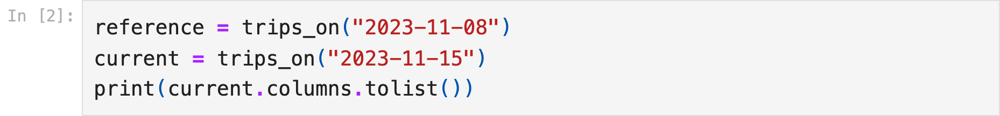
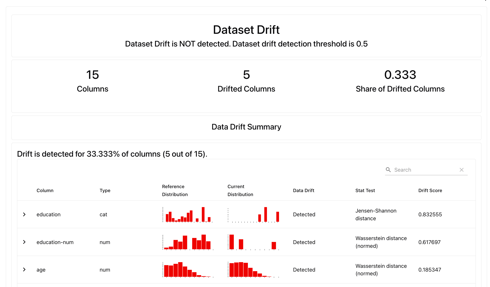
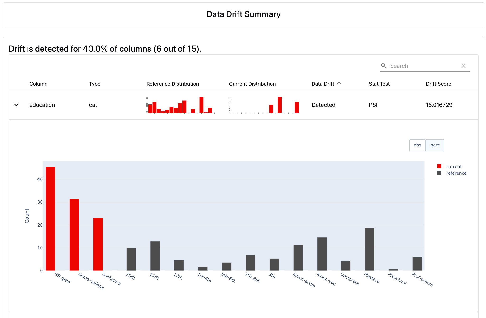
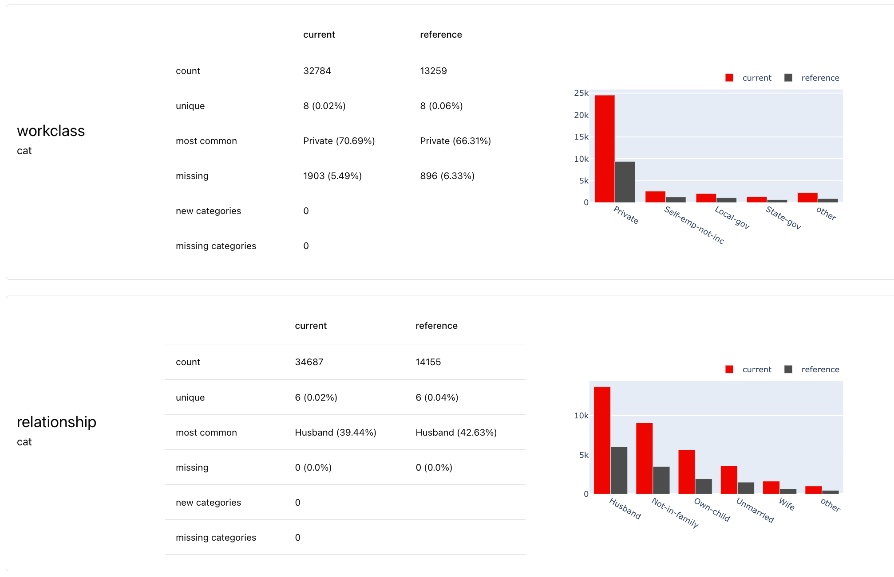
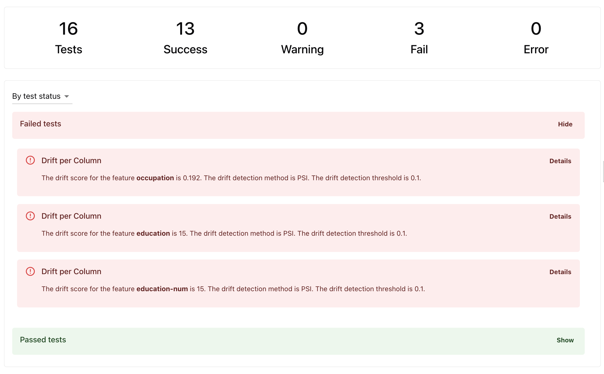
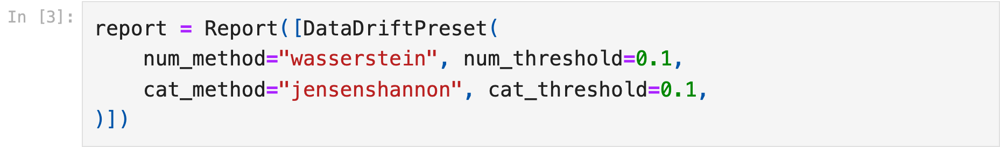
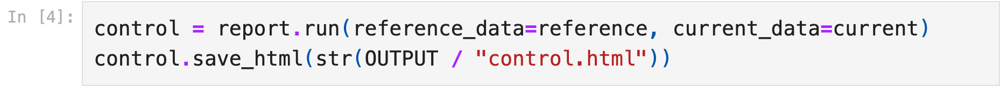
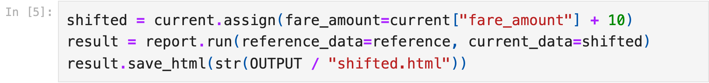

Evidently
Drift и качество данных
Как обнаружить изменение тарифа среди 117 тысяч поездок за день?
Александр Наумцев · ИТМО · 30 ноября 2026
Что изменилось в данных?
Data drift — изменение распределения признака между эталонной и текущей партиями. Его можно обнаружить сразу после загрузки данных.
Допустим, модель предсказала цену поездки — $20, а пассажир заплатил $23. Модель ошиблась на $3. Чтобы понять, в какой день прогнозы были точнее, считаем, на сколько долларов модель в среднем ошибалась 8 и 15 ноября.
В сегодняшнем демо измеряем drift пяти признаков.
Две среды в Нью-Йорке
| Партия | Поездки | Медиана fare_amount ($) |
|---|
| 8 ноября 2023 · reference | 117 271 | $14,20 |
| 15 ноября 2023 · current | 117 344 | $14,20 |
| Признак (значение) | Тип в отчёте |
|---|
fare_amount (базовый тариф, доллары США) | Числовой |
trip_distance (расстояние поездки, мили) | Числовой |
passenger_count (число пассажиров) | Категориальный в отчёте |
payment_type (способ оплаты) | Категориальный |
PULocationID (код зоны посадки) | Категориальный |
Yellow Cab — лицензированные жёлтые такси Нью-Йорка. Их можно поймать прямо на улице, подняв руку. В выборке — поездки с базовым тарифом больше нуля и до $200 включительно, оплаченные картой или наличными.

Источник: NYC TLC Trip Record Data · 2023 → November → Yellow Taxi
Как устроен Evidently?
Evidently — библиотека для оценки данных и предсказаний. В нашем примере она получает две таблицы и измеряет, насколько изменился каждый признак.
| Сущность | Роль в нашем примере | Документация |
|---|
reference_data и current_data | Вход расчёта. Поездки за 8 ноября задают базу сравнения, за 15 ноября — проверяемую партию. | Две выборки ↗ |
Metric | Один расчёт. Например, расстояние между распределениями fare_amount (базового тарифа) за два дня. | Каталог метрик ↗ |
DataDriftPreset | Готовый набор метрик. Проверяет признаки по отдельности и считает долю признаков со сдвигом. | Состав пресета ↗ |
Report | Объединяет выбранные метрики и пресеты. Одно описание отчёта можно запускать на разных партиях данных. | Примеры отчётов ↗ |
Какие данные сравнивать и что измерять?
Reference и current
В примере Adult в текущую выборку помещают три категории education (образование), отсутствующие в эталонной. Такой пример показывает, обнаружит ли проверка новые категории.

Иллюстрация Evidently · Пример с Adult ↗Metric
RowCount() считает строки во всей таблице. MissingValueCount считает пропуски в колонке. ValueDrift сравнивает её распределение в двух выборках.

Иллюстрация Evidently · Метрики и параметры ↗Как собрать проверки в отчёт?
Preset
DataSummaryPreset() даёт обзор таблицы и пропусков. DataDriftPreset() показывает изменения между выборками. Для классификации есть ClassificationPreset().

Иллюстрация Evidently · Каталог пресетов ↗Report
В документации есть отчёт с одной метрикой и отчёт с двумя пресетами сразу. Опция include_tests=True добавляет проверки условий и показывает, какие из них сработали.

Иллюстрация Evidently · Примеры Report ↗Как получить первый отчёт


Report([...]) задаёт методы и пороги. run(...) применяет их к двум таблицам и возвращает результат в control. Вызов control.save_html(...) записывает этот результат с графиками в файл для браузера.
Открыть исходный отчёт ↗
Меняем один признак
Предположим, водители стали брать больше. К реальной цене каждой поездки 15 ноября прибавляем случайную сумму: среднее $6, дисперсия 4 долл.². В коде scale=2 — стандартное отклонение в долларах.

В отчёте раскрываем строку fare_amount и сравниваем распределения стоимости.
Открыть отчёт после надбавки ↗
Какой тест сработал?

Расстояние по тарифу выросло с 0,0095 до 0,3672 и пересекло порог 0,1. Сигнал по одному из пяти признаков даёт 20%. Порог сводной карточки по всему датасету — 50%.
А если сломались категории?
Берём исходную партию за 15 ноября. Представим, что после изменения справочника каждая оплата записалась как наличная.

Расстояние Дженсена — Шеннона по способу оплаты выросло с 0,000046 до 0,6927. Расстояние по тарифу осталось на уровне 0,0095.
Открыть отчёт по способу оплаты ↗
Что делать после сигнала?
- Тариф. Сверить несколько записей с чеками, проверить надбавки, единицы измерения и дату изменения правил.
- Способ оплаты. Сверить исходные коды платежей и их преобразование в
card и cash. - Модель. Когда доступны фактические исходы, сравнить ошибку на двух периодах и отдельно в затронутом сегменте.
Ноутбук с кодом и выводом · Методы и пороги Evidently · Data Drift Preset